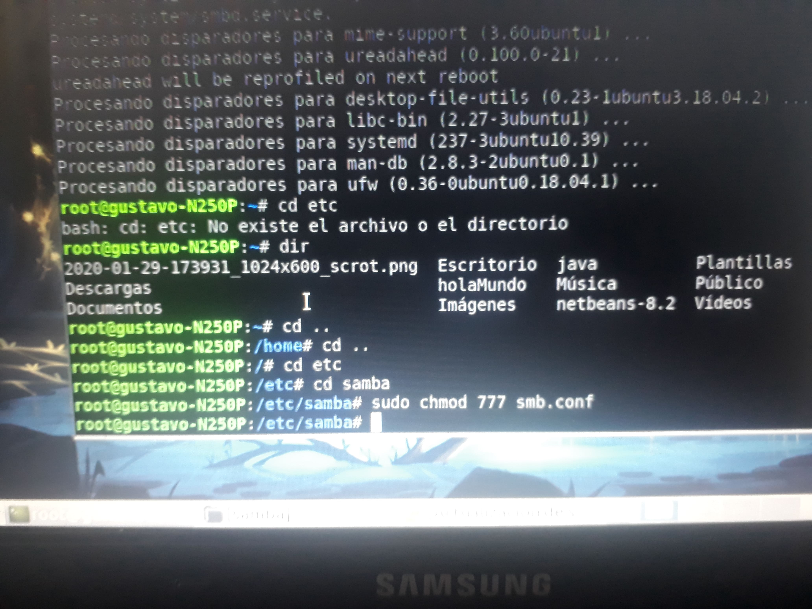

Seminario de Solución de Problemas de Sistemas Operativos de Red
D05
ACTIVIDAD 13

Instalar samba en windows y linux y configurar para compartir, carpetas, archivos e impresoras.
En Windows lo primero que tenemos que hacer es abrir la opción de "activar o desactivar las caracteristicas de windows".
Una vez que ingresemos activamos la opción de "Compatibilidad con el protocolo para compartir archivos SMB1.0/CIFS".
Enseguida comenzará la busqueda de archivos necesarios, por lo que tendremos que esperar.
Posteriormente se aplicarán los cambios lo cual toma un tiempo.

Una vez que el proceso termine tendrémos que reiniciar nuestro PC.
Esperamos a que la computadora se reinicie.
Creamos una carpeta con los archivos que deseamos compartir.
Damos click derecho en la carpeta, nos vamos a "Propiedades", seleccionamos "Compartir" y damos click en "Uso Compartido Avanzado".
Después le damos click a "Permisos"
Activamos todos los permisos.
Ahora en Lubuntu abrimos la consola y actualizamos los paquetes con el comando "sudo apt-get update". Para esto primero tenemos que iniciar como root con el comando "sudo -s"
Una vez actualizados los paquetes usamos el comando "sudo apt-get install samba".
Se comenzará la instalación y tendremos que presionar "s" para continuar.
Esperamos a que se instale samba.
Ahora necesitamos encontrar y modificar el archivo "smb.conf".
Para ello en la consola nos movemos a la ubicación del archivo y con el comando "sudo chmod 777 smb.conf" otorgamos permisos para poder modificarlo.
Abrimos el archivo en algún editor de texto y agregamos las instrucciónes que se muestran en la imagen.
Ahora creamos un usuario con el comando "sudo smbpasswd -L -a NombreDeUsuario".
Con el comando "sudo smbpasswd -L -e NombreDeUusuario" activamos a dicho usuario.

Con el comando "sudo /etc/init.d/smbd restart" reiniciamos el servicio para que se apliquen los cambios.
Agregamos la imagen que deseamos compartir a nuestra carpeta compartida.
Desde Windows podremos acceder a la carpeta compartida haciendo click en la opción de red. Como puede verse esta disponible la carpeta "GUSTAVO-N250P" la carpeta compartida desde Lubuntu.
Tratamos de acceder y nos pedirá llenar un formulario.
El formulario lo llenamos con los datos del usuario creado en Lubuntu.
Una vez ingresadas las credenciales correctas podremos acceder a la carpeta compartida.
Aquí se muestra la imagen compartida.
Para acceder desde Lubunto de la misma forma nos vamos a red.
Abrimos la red de Windows.
Y nos aparece la carpeta compartida desde Windows.